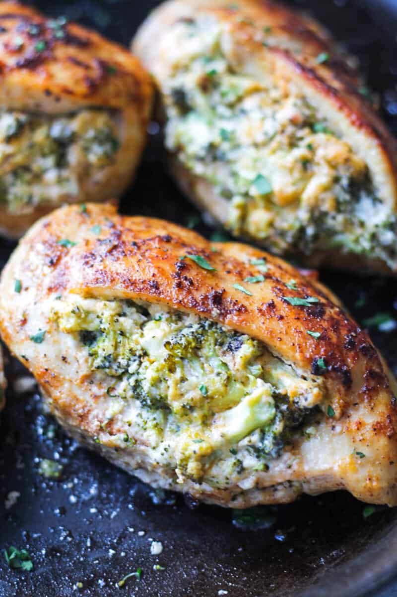

Bake stuff chicken backs recipe

Description
The image above may change depending on the amount made and ingredients use
Ingredients
- 4-5 chicken backs
- Spices
- Garlic
- mayo
- potatos
- onion
-
ketchup
- parmesan
- milk
- mustard
- waster sauce
- brown sugar
- sweet pepers
- jerk seasoing
Steps
- Step1: Get a large pot and place on to stove with water , salt and potato cover the pot and wait till potatos are cook
- Step2:Get a bowl and place the chicken with lemon juice and salt let it marinate for 30 min then rise
- Step3:Strain of the water from the cooked potatos and place them back into the pot add salt,mayo,milk,butter,spices and jerk season
- Step4:Get another small bowl place ketchup,mustard,waster sauce and spices mix well
- Step5:After rising off the marinate on the chicken add spices and jerk season
- Step6:Grease and oil a deep dish
- Step7:Place the mash potatos in the chicken and place into the dish
-
- Step8:Add the sauce ontop of the chicken along with dice sweet pepers,onions and garlic
-
- Step9: Heat an oven to 180 degrees place the pan in the oven and let the meat fully cook
-
- Step10: Take it out of the oven let it cool then serve.enjoy
-